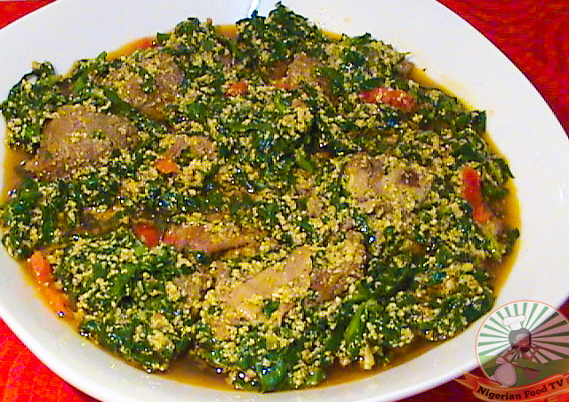

Africa Nigerian Dish
EGUSI SOUP (Melon seed soup)

Nigerian Egusi Soup with Vegetables (Melon seed soup)
Egusi Soup With Fresh Fish &Vegetables
Egusi soup ,also known as Obe Efo elegusi/ Ofe Egusi, is a delicious Nigerian soup that is
made with ground melon seeds and enriched with assorted meat, fish and spices. It is
actually one of the most popular Nigerian soups used for eating bolus meals such as Pounded
Yams, Eba, fufu and wheat meal.It is also popular in other parts of west Africa and the
cooking methods differs from place to place.
The common variations for cooking Egusi Soup include:
Variation 1: Egusi soup cooked with vegetables(either spinach/ugu, bitter leaves or a
combination of both.
Variation 2: Egusi soup cooked without vegetables
Variation 3: Frying the ground egusi seeds before adding the palm oil and condiments
Variation 4: Boiling the assorted meat and fish, then adding the ground egusi seeds,with
or without vegetables.
I always urge my friends to try out the different variations (if they can), and they’/ll
realize that the cooking methods are simply a matter of preference. All that really
matters is getting it right and making sure that the ground egusi seeds are properly
cooked/fried,to get the raw taste out.
Ingredients for Egusi Soup
- 1 teaspoonful ground Crayfish
- 1 cup ground Egusi/melon seeds
- 500g assorted meat of choice (tripe/shaki,beef, chicken, cow’/s skin/ponmo)
- 200g assorted fish (stock fish, dried fish)
- 150 g Fresh fish ( 1 medium sized mackerel fish will do)
- 750g Spinach leaves/Ugu/collard greens
- 1 medium sized onion bulb.
- 1/2 cup palm oil (2 cooking-spoonful)
- 1 teaspoonful ground chili pepper/fresh scotch bonnet(atarodo)
-
- 1 teaspoonful ground Crayfish
- 1 teaspoonful ground Crayfish
- 2 bouillon/stock cubes (seasoning cubes)
- Salt to taste
Cooking Method(STEPS)
- Grind the egusi seeds until smooth.Place in a bowl and dissolve with a little
lukewarm water to form a paste.
Dissolving the egusi is optional, but it helps to reduce burning when frying in
the oil.
- Slice the vegetables and set aside
- Wash and season the assorted meat and fish with sliced onions, one stock
cube(and any other meat seasoning of choice) and salt to taste. Cook until tender
and set aside. Reserve the meat stock.
Now to cook the Soup
- Heat up the oil in a pot until hot. Add the dissolved Egusi paste and fry, stirring
constantly until the soup begins to thicken. Fry for about 15 to 20 minutes
or when you notice the oil rise to the top of the egusi.
- Add the meat stock, mix thoroughly and leave to boil for 10 minutes.
- Add the ground pepper, crayfish, stock cube and the cooked assorted meat & fish and
cook for 10 minutes.
- Next, add the fresh fish and cook until the fish is done.
- Then, add the sliced vegetables and salt to taste. Simmer for 5 minutes and the soup
is ready.
Egusi Soup can also be used as a sauce for boiled rice and mostly enjoyed with semolina,
amala, tuwo masara, fufu , pounded yam, and several other bolus meals.